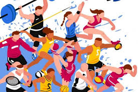

Спорт (от англ. sport — сокращение от первоначального старофранц. disport — «развлечение, забава»[1]) — организованная по определённым правилам деятельность людей (спортсме́нов), состоящая в сопоставлении их физических или интеллектуальных способностей. Спорт представляет собой специфический род физической (или интеллектуальной) активности, совершаемой с целью соревнования, а также целенаправленной подготовки (СФП) к ним путём тренировки. В сочетании с отдыхом, стремлением к постепенному улучшению физического здоровья, повышению уровня интеллекта, получению морального удовлетворения, к совершенству, улучшению личных, групповых и абсолютных рекордов, славе, улучшению собственных физических возможностей и навыков спорт предназначен для совершенствования физико-психических характеристик человека. Цель спорта высших достижений — это достижение максимально возможных спортивных результатов (или побед) на крупнейших спортивных соревнованиях. Содержание 1 Определение спорта 2 История 2.1 Спорт в древности 2.2 Спорт в Средние века и эпоху Возрождения 2.3 Спорт в Новое время 3 Профессиональный спорт 4 Виды спорта 5 Спортивные соревнования 6 Спортивные награды 7 Спорт в России 8 Критика 9 См. также 10 Примечания 11 Литература 12 Ссылки Определение спорта Не существует чёткого определения спорта, однозначно отделяющего собственно спорт от других видов досуга, хотя попытки определить границы понятия предпринимали неоднократно. Рабле употреблял слово «desporter» в значении «забавляться»[2]. В современном значении это слово стал употреблять шотландский врач-психиатр Томас Арнольд, изучавший влияние физических упражнений на здоровье человека. Сайт международного конвента «СпортАккорд», объединяющего свыше 100 международных спортивных федераций, предлагает определение спорта, в которое входят следующие критерии: соревновательный элемент; отсутствие основанности правил на элементе случайности или везения; исключение ненужного риска здоровью и безопасности участников и зрителей; ненанесение умышленного вреда живым существам; отсутствие монополии единственного производителя на необходимое оборудование[3]. Более узкое определение спорта даёт «Большая олимпийская энциклопедия» 2006 года, согласно которой центральным в понятии спорта является его физическая составляющая; кратко спорт определяют как «соревнования по различным физическим упражнениям и их комплексам, а также система их организации и проведения». Олимпийская энциклопедия сопровождает краткую характеристику расширительным толкованием, в которое помимо собственно соревнований и систем их организации входят также подготовка к соревнованиям (тренировка), специфические социальные отношения в этой области человеческой деятельности и общественно значимые результаты такой деятельности[4]. История Спорт в древности Сцены борьбы из гробницы в Бени-Хасане, Среднее царство. Зарождение физической культуры в целом и спорта в частности пытаются объяснить ряд теорий:
«Теории игры», у истоков которых стоял Ф. Шиллер и которые позже развивали Бюхер, Гроос и Летурно, рассматривают всю человеческую культуру, в том числе и физическую, как развитие игровой деятельности. В современной философии наиболее известным сторонником теорий игры является Йохан Хёйзинга[5][6]. К теориям игры примыкает «теория излишней энергии» Г. Спенсера, которая может рассматриваться и как их разновидность[6]. Cогласно этой теории, первобытный человек, нуждавшийся в высвобождении избыточной энергии, совершенствовал движения (игровые и танцевальные), которые позволяли это наиболее успешно делать[5]. «Теория магии» (Рейнак, позже Дим, Кербе, Жиллет) связывает возникновение физической культуры с необходимостью обучения и совершенствования имитирующих труд и охоту плясок и магических ритуалов[6][5]. «Теория войны» (Берк) рассматривает физическую культуру и спорт как средство развития физической формы и навыков, необходимых для ведения боя[5]. Материалистическая теория, или «теория труда» (предложенная Г. В. Плехановым и развитая Н. И. Пономарёвым) рассматривает в качестве истоков почти всех современных видов физкультуры и спорта виды трудовой деятельности[6][7]. Многие примеры пещерного искусства, открытые на сегодняшний день, содержат изображения ритуальных церемониальных сцен. Несмотря на то, что действия, запечатлённые на этих изображениях, нельзя отнести исключительно к современному понятию о спорте, всё же можно сделать вывод, что уже тогда существовали занятия и ритуалы, напоминающие спортивную деятельность. Эти изображения, находящиеся во Франции, Африке и Австралии, были сделаны 30 000 лет назад. В Монголии обнаружено датируемое седьмым тысячелетием до н. э. наскальное изображение окружённых толпой борцов[8]. Наскальные рисунки, обнаруженные в Японии, изображают поединки в стиле сумо, по-видимому, связанные с сельскохозяйственными религиозными ритуалами[9].
Существуют предметы и строения, говорящие о том, что на территории Китая существовала деятельность, подходящая под современное определение спорта, уже за 4000 лет до нашей эры. По всей видимости, гимнастика была популярным видом спорта в древнем Китае. В 1-м тысячелетии до н. э. среди простого народа была популярна «чжу кэ» — командная игра в мяч, в рамках которой различалось до 70 видов ударов и до 10 видов нарушений правил[10]. Шумерская цивилизация оставила археологам ряд артефактов, свидетельствующих о популярности борьбы в Древней Месопотамии, включая каменные барельефы примерно пятитысячелетней давности и бронзовую статуэтку из Хафаджи, изображающую борцов и датируемую примерно 2600 годом до н. э. К этому же периоду относятся живописные изображения борцов в древнеегипетских гробницах Бени-Хасана, показывающие, что уже 4,5 тысячи лет назад в борьбе применялось большинство современных захватов[11]. Изображения этой эпохи могут свидетельствовать о том, что в состязаниях по борьбе участвовали ливийцы и нубийцы, а также о наличии судейства. Более древние изображения могут быть также истолкованы как свидетельство о состязаниях в беге, с помощью которых, возможно, даже выбирались правители[12]. В Древней Персии существовала конная игра чаутам, напоминающая поло. Этой игре, как и шахматам, стрельбе, метанию копья, борьбе и бегу мальчиков обучали в специальных воспитательных домах при дворе[13]. Гермес, олимпийский бог — покровитель атлетов Награждение победительниц в женских соревнованиях. Римская мозаика из Виллы дель-Касале у Пьяцца-Армерина (Сицилия). IV в. н. э. В Центральной Америке получила развитие месоамериканская игра в мяч, в том числе у народа ольмеков — уже в XIV веке до н. э. Существовали различные виды игры, в которых разрешалось ударять мяч разными частями тела или же клюшкой, найденные игровые площадки с укреплёнными на разных концах на большой высоте кольцами указывают на возможное существование подобия современного баскетбола. Игра в мяч использовалась народами Америки для разрешения спорных вопросов (в том числе споров за территорию) и зачастую носила ритуальный характер, особенно во времена расцвета культуры майя; поражение в игре могло обернуться смертью для проигравших, которых приносили в жертву[14].
В Древней Греции уже существовало большое разнообразие видов спорта. Наибольшее развитие получили различные виды борьбы, бег, метание диска и состязания на колесницах. Судя по этому списку, военная культура и военное искусство имели прямое отношение к спорту в Древней Греции (и не только там). Там же каждые четыре года начиная с 776 года до н. э. проводились Олимпийские игры — в маленькой деревне в Пелопоннесе под названием Олимпия. Помимо Олимпийских игр, бывших древнейшим общим для всей Эллады спортивным праздником, межгосударственный характер носили основанные в VI веке до н. э. Пифийские, Немейские и Истмийские игры[15]. Позже, уже в период римского господства над Грецией, к масштабным спортивным мероприятиям добавились учреждённые Октавианом Акцийские игры и учреждённые Домицианом Капитолийские игры[16], однако в римский период в целом спорт перестал носить массовый характер (см. Профессиональный спорт). Спорт в Средние века и эпоху Возрождения После того, как в Европе на смену язычеству пришло христианство, занятия спортом пришли в упадок. Церковная доктрина считала упражнения для развития тела развращающими душу и отдаляющими человека от Бога. В 1-м послании к Коринфянам — каноническом христианском тексте — говорится: Не знаете ли, что тела ваши суть храм живущего в вас Святаго Духа, Которого имеете вы от Бога, и вы не свои?.. Посему прославляйте Бога и в телах ваших и в душах ваших, которые суть Божии. 1Кор. 6:19, 20 Эти слова отражают раннехристианский подход к человеческому телу, коренным образом отличный от более позднего, закреплённого Никейским собором. Если для первых христиан тело — это храм Святого духа, то позже восторжествовала идея отказа от мирских благ во имя спасения души, из которой следовали требования аскетизма и «умерщвления плоти», представление о греховности физических упражнений. Один из отцов церкви Тертуллиан писал в трактате «О зрелищах»[17]: Нельзя без срама смотреть на всё, что происходит на стадионе: на кулачный бой, на попирание ногами, на пощёчины и другие буйства, обезображивающие лицо человека, созданного по образу божию. Благоговея к религии, ты не станешь одобрять безумного бега, бешеных движений, сопровождающих метание диска... Уважая стыдливость, ты не будешь выставлять напоказ телесных сил, служащих единственно тщеславию тех, кто их употребляет, и к унижению тех, против кого они направлены...
После превращения христианства в государственную религию Римской империи античная физическая культура пришла в упадок и уже в 394 году, при императоре Феодосии, последовал отказ от Олимпийских игр и олимпийского летосчисления. В дальнейшем спортивные состязания проводились от случая к случаю, только по специальным разрешениям и, главным образом, в восточной части империи (в последний раз в 520 году). После масштабных народных волнений 529 года император Юстиниан закрыл почти все организации и учреждения физической культуры, включая знаменитый Афинский гимнасий. Развитие спорта в западном мире остановилось на века, возобновившись лишь в эпоху Возрождения[18]. В этот же период глохнет физическая культура и на другом конце Евразии — в Китае, где под влиянием конфуцианства упал интерес к физическому развитию человека. Эта эпоха стала периодом дробления китайской лечебной гимнастики на множество сильно отличающихся направлений[13]. Уроки восстания Жёлтых повязок побудили цзиньские власти в Китае запретить ношение оружия, что привело к появлению в народе новых форм борьбы без оружия, а также развитию фехтования на палках. В VI веке зарождается школа боевых искусств Шаолиня, затем аналогичные школы возникают и в других местах в Китае при поддержке буддийских монахов, а ещё позднее, уже в середине второго тысячелетия новой эры, похожий запрет на ношение оружия простонародьем привёл к появлению боевых искусств Японии, отличных от тех, которые развивались на континенте. В эпоху монгольского господства (династия Юань) распространение в Китае получили и другие виды спорта, связанные с военной подготовкой — верховая езда, стрельба из лука, различные виды борьбы. Японские самураи, которые даже с оружием начали проигрывать бои невооружённым крестьянам, в свою очередь разработали систему борьбы без оружия, получившей название «дзю-дзюцу» (на Западе — «джиу-джитсу»)[19].
Несмотря на официальное отрицательное отношение христианской церкви к физической культуре, властям приходилось не только поощрять подготовку рыцарства, бывшего основной военной силой в Западной Европе, но и закрывать глаза на народные игры и соревнования — в частности, в германских землях и в Ирландии, где традиция игр сохранилась до второй половины XII века. Ещё более терпимым было отношение к популярным у народа развлечениям в регионах, где господствовало православие. С ослаблением феодального гнёта в Западной Европе в период высокого Средневековья и позже в эпоху Возрождения сформировалась схожая для разных стран простонародная физическая культура, включавшая бег, прыжки, метание тяжестей и борьбу. Уже в XIII веке появляются беговые дорожки и начинается организованное производство коньков, а в XIV веке встречаются описания разнообразных игр с мячом — тенниса, файвза, бендибола, футбола (в Англии и в Италии, где игра носила название «кальчо»), боулинга, хёрлинга[20]. В городах, где существовала цеховая культура, проводились соревнования между цехами в дисциплинах, связанных с основной профессией участников — в гребле, прыжках в воду, плавании у солеваров, в фехтовании у оружейников и т. д.[17] С началом эпохи Возрождения в Западной и Центральной Европе возвращается интерес к гармоничному развитию человеческого тела. На смену рыцарству в качестве основы регулярных армий приходит пехота, а среди народных соревнований видное место занимают турниры по стрельбе (как из лука и арбалета, так и из огнестрельного оружия) и фехтованию. В XVI веке в Италии выходят трактаты с подробным описанием правил отдельных игр (в том числе кальчо) и методики тренировок. Во Франции в том же веке переживает бум жё-де-пом — предшественник тенниса. Современник-англичанин, посетивший Францию в конце века, писал, что число площадок для игры в мяч превышало там число церквей. В Нидерландах столь же популярной забавой стали коньки[21]. Спорт в Новое время Славная революция в Англии в конце XVII века отменила все налагавшиеся веками запреты на игры и соревнования, дав толчок к их расцвету[22]. В это время в буржуазной Англии складываются традиции так называемого «спорта джентльменов»: молодые люди из богатых семей не столько занимались спортом сами, сколько участвовали в тотализаторе на скачках и состязаниях по бегу и боксу, спонсируя развитие этих видов спорта и косвенно влияя на формирование устойчивых, общих по всей стране правил. Сами джентльмены предпочитали играть в крикет, не требовавший больших физических усилий и не представлявший опасности здоровью. Промышленная революция и массовое производство привели к тому, что у всё большего числа людей стало появляться свободное время. Это в свою очередь стало залогом массовости спорта. Больше людей хотело и могло сделать спорт частью своей жизни, занимаясь спортом напрямую или посвящая свой досуг наблюдениям за спортивными состязаниями. В 1722 году в Англии вышло первое учебное пособие по фигурному катанию, а в 1742 году открылось первое в мире спортивное общество фигурного катания — Эдинбургский конькобежный клуб. Английский подход к спорту распространился в континентальной Европе и в заокеанских колониях, став господствующим в западном мире;
Важный вклад в развитие физической культуры, как своего времени, так и последующих веков, внёс немецкий врач и филантроп И. К. Ф. Гутсмутс. Им были не только написаны учебники гимнастики и плавания, а также труд, популяризовавший спортивные игры, но и внедрены использующиеся до сих пор гимнастические снаряды, в том числе модернизированный гимнастический конь и турник, а также прыжки с шестом[24]. Гимнастика активно развивалась на протяжении XIX века во многих европейских странах, где ей придавали прикладное значение в условиях роста национального самосознания и необходимости массовой военной подготовки. Свои гимнастические школы появились во Франции, Дании, германских государствах, Швейцарии, Чехии (в то время входившей в Австрийскую империю) и Швеции. Шведский педагог Ялмар Линг, сын терапевта Пера Линга, разработал ряд использующихся по сей день гимнастических снарядов — скамью с седлом (дальнейшее развитие гимнастического коня), бревно, шведскую стенку, прыжковый трамплин[25]. В России к началу XX века особо популярными были чешская, шведская и немецкая гимнастические школы, а также собственная система физического воспитания, разработанная П. Ф. Лесгафтом[26]. Первые международные спортивные союзы по годам основания (приводятся по книге: В. В. Григорьевич. Всеобщая история физической культуры и спорта. — М.: Советский спорт, 2008.[27]) Вид спорта Международные федерации спорта Год основания Гимнастика Международная федерация гимнастики 1881 Гребля Международная федерация гребных обществ 1892 Конькобежный спорт Международный союз конькобежцев 1892 Боулинг Международная федерация боулинга 1895 Велосипедный спорт Международный союз велосипедистов 1900 Автомобильный спорт Международная автомобильная федерация 1904 Футбол Международная федерация футбольных ассоциаций 1904 Авиационный спорт Международная авиационная федерация[Прим. 1] 1905 Стрелковый спорт Международная федерация спортивной стрельбы[Прим. 2] 1905/1907 Парусный спорт Международная федерация парусного спорта 1907 Мотоспорт Международная федерация мотоспорта 1908 Плавание[Прим. 3] Международная федерация плавания 1908 Хоккей Международная лига хоккея на льду 1908 Крикет Международный совет крикета 1909 Лёгкая атлетика Международная ассоциация легкоатлетических федераций[Прим. 4] 1912 Теннис Международная федерация тенниса[Прим. 5] 1912/1913 Борьба Международная федерация объединённых стилей борьбы[Прим. 6] 1912/1914 Фехтование Международная федерация фехтования 1913 Историческое название — Международная ассоциация воздухоплавания Историческое название — Международный союз национальных стрелковых федераций и ассоциаций Включая прыжки в воду и водное поло Историческое название — Международная любительская легкоатлетическая федерация Историческое название — Международная федерация лаун-тенниса Историческое название — Международная любительская федерация борьбы К концу XIX века в основном сформировались правила популярных спортивных игр. В Англии подлинно народной игрой становился футбол, развивались крикет и крокет, своих поклонников нашли завезённые из колоний поло, бадминтон, настольный теннис, лакросс. В США обрёл популярность бейсбол, развившийся из английской народной игры с битой. Во Франции особо популярными стали легкоатлетические соревнования, в 80-е годы сооружена конькобежная дорожка из искусственного льда. В разных странах зарождаются традиции вело-, а затем и автогонок[28]. Большую роль в популяризации спорта и физической культуры сыграла международная Ассоциация молодых христиан (YMCA). Под её эгидой развивался институт спортивного тренерства, строились спортивные сооружения; деятельность Ассоциации привела к изобретению волейбола и баскетбола. В России один из деятелей YMCA основал Общество содействия духовному, нравственному и физическому развитию молодых людей «Маяк», просуществовавшее до Октябрьской революции[29]. Другой популярной в России физкультурно-спортивной организацией стало Общество телесного воспитания «Богатырь», всего же подобного рода организаций к 1914 году насчитывалось в стране уже 360[26].
Уже с середины XIX века спорт вновь перерос национальные рамки, началось развитие международного спортивного движения. В 1851 году прошёл первый международный шахматный турнир, начались частным образом организованные «чемпионаты мира» по разным видам спорта. Зачастую такие соревнования проходили несколько раз в год в разных странах и по разным правилам, что стало толчком к организации международных спортивных союзов (первым из которых стал в 1881 году Европейский союз гимнастики — с 1897 года Международная федерация гимнастики) и унификации правил[27]. Основная статья: Олимпийские игры Также в середине XIX века начинаются попытки возрождения Олимпийских игр античности. Первые «Олимпийские игры» нового времени прошли в 1836 году в курортном местечке Рамлёса (Швеция) — их организовал для жителей соседних сёл ученик Пера Линга Густав Шаратау. Через два года была предпринята попытка возродить Олимпийские игры уже в недавно получившей независимость Греции, но дальше первых игр в деревне рядом с исторической Олимпией дело в этот раз не пошло. В 1859 году игры прошли уже в Афинах, с большим размахом, под патронажем короля Оттона, и включали соревнования в ряде спортивных дисциплин на восстановленном античном стадионе, а также состязания в искусстве в специально для этого построенном «Заппейоне» (названном в честь пожертвовавшего деньги на организацию Евангелиса Заппаса). Эти игры ещё были не международными в полном смысле слова — в них участвовали только этнические греки из разных стран. В дальнейшем игры в этом формате проводились ещё три раза — в 1870, 1875, и 1888—1889 годах[30].
Подлинным возрождением Олимпийские игры обязаны энтузиасту физического воспитания Пьеру де Кубертену. В начале 1880-х годов Кубертен с единомышленниками основал во Франции Национальную лигу физического воспитания, а в конце того же десятилетия — Комитет по пропаганде физического воспитания (вместе с министром просвещения Жюлем Симоном) и Союз французских атлетических обществ. В 1889 году по инициативе Кубертена в рамках Всемирной выставки в Париже прошёл конгресс по физической культуре, а в 1892 году он впервые выступил в Сорбонне с инициативой мультиспортивных международных соревнований — новых Олимпийских игр. Учредительный конгресс Олимпийских игр прошёл два года спустя при участии делегатов от 39 спортивных обществ Франции, Великобритании, США, России, Швеции, Испании, Италии, Греции, Бельгии и Нидерландов (были также получены заверения о поддержке из Австралии и Японии). Делегатами было принято решение, что первые Олимпийские игры современности пройдут в 1896 году в Греции, и был учреждён Международный олимпийский комитет[30]. Первые Олимпийские игры прошли в апреле 1896 года. Соревнования проводились в греко-римской борьбе, велоспорте, гимнастике, лёгкой атлетике, плавании, стрельбе, теннисе, тяжёлой атлетике и фехтовании — всего были разыграны 43 комплекта наград; планировавшиеся соревнования по гребле не состоялись из-за отсутствия участников. Всего в Играх участвовал 241 спортсмен из 14 стран (из них больше 200 от страны-организатора), медали в общей сложности завоевали спортсмены десяти разных стран[31]. После этого Олимпийские игры современности проводятся каждые четыре года, за исключением годов, попавших на период мировых войн. Тенденции спорта как массового зрелища получили развитие с появлением СМИ и глобальных коммуникаций. Спорт стал профессиональным, что ещё больше увеличило его популярность. Современное постиндустриальное общество, базируясь на таких ресурсах, как информация и знания, используя возможности индивидуальных контактов людей при помощи интернет-технологий, активно культивирует интеллектуальные виды спорта, такие как покер и сетевые многопользовательские игры.
Кулачный боец (I в. до н. э., Национальный музей Рима) Хотя первоначально спортивные состязания носили любительский характер, и участники Олимпийских игр в остальное время были заняты трудом в других сферах деятельности, уже в античности, начиная с V в. до н. э., сформировалась прослойка профессиональных атлетов. Система местных соревнований-агонов со значительными призами позволяла представителям низших классов, занимающимся профессиональным спортом, обеспечивать себе безбедное существование[32]. Особое распространение профессиональный спорт получил сначала в эллинистической Греции, а затем в Древнем Риме, как результат изменения концепции физического воспитания: из подготовки бойцов всеобщего ополчения спорт превращался в зрелище, и целенаправленно им, как любым видом искусства, занимались лишь немногие[33]. Созданный в I в. до н. э. образ профессионального атлета — кулачного бойца — работы Аполлония, сына Нестора, показывает, как далеко к этому времени ушла сама концепция спорта от его первоначальной идеи. Скульптурный портрет вместо гармонично сложенной фигуры человека-гражданина, характерной для классической греческой школы, передаёт с натуралистическими подробностями гипертрофированную мускулатуру профессионального бойца, сломанный нос, разорванные уши и шрамы, а также «спортивный инвентарь» — перчатки с железными вставками на руках[34].
После упадка спорта в целом в Средние века и его возрождения в новое время получил новое развитие и профессиональный спорт. Например, из общей массы любителей кулачных боёв в Англии в XVIII веке выделились лучшие мастера, поставившие эти развлечение на финансовую основу. Первую школу бокса в Англии открыл в первой половине XVIII века лучший боксёр-тяжеловес своего времени Джеймс Фигг, дававший уроки кулачного боя за плату[35]. В середине того же века уже началась практика манипуляций с результатами боёв, позволявшая антрепренёрам получать значительные суммы денег[36]. Баскетбол В XX веке, когда большое развитие получила культура досуга, спортивные состязания и наблюдения за ними стали популярными развлечениями для зрителей и профессиональной деятельностью для спортсменов. Профессиональные спортсмены высокого уровня зарабатывают большие гонорары, а также получают доходы, рекламируя различные товары, и становятся знаменитостями — иногда исключительно в среде болельщиков, а иногда и среди большинства населения. Для регулирования происходящего в профессиональном спорте образуются общие и узкоспециальные организации и ассоциации, которые объединяют спортсменов, тренеров, судей, а иногда и болельщиков. То, что спорт превратился в бизнес и источник благосостояния, сильно влияет на суть состязаний. Ввиду требований зрелищности или удобства судейства часто изменяются спортивные правила. Так, в 60-е годы XX века вначале Американская баскетбольная лига, а затем и Американская баскетбольная ассоциация с целью оживления игры и повышения интереса у зрителей ввели в обиход трёхочковые броски[37], позже ставшие частью баскетбольных правил во всём мире. С 1970 года на профессиональных теннисных турнирах в целях сокращения времени матчей система, предполагавшая обязательную разницу в два гейма для победы в сете, вытесняется так называемым тай-брейком — решающим геймом, разыгрываемым при равном счёте 6:6 в сете[38]. В конце XX века в волейболе, где до этого можно было заработать очко только на своей подаче, в целях увеличения зрелищности была введена система «ралли-пойнт», по которой каждый розыгрыш мяча стал приносить очко — сначала в решающей, пятой, партии, а с 1998 года и в остальных партиях матча[39].
Виды спорта Вид спорта — это совокупность видов спортивных соревнований, объединённых по признакам схожести правил, одной спортивной федерации и т. п. Традиционно с точки зрения Международного олимпийского комитета отдельным видом спорта считается совокупность всех видов соревнований, проводимых одной международной федерацией. Исключение составляли современное пятиборье и биатлон, которыми до 1993 года руководила одна международная федерация. Виды спорта, признанные в соответствии с Олимпийской хартией, называются олимпийскими; только олимпийские виды спорта могут быть включены в программу Олимпийских игр. В Олимпийской хартии приводится исчерпывающий список международных спортивных федераций, руководящих видами спорта, признанными олимпийскими; всего в этом списке на 2013 год насчитывается 35 федераций, ограничения связаны с принятием Всемирного антидопингового кодекса, независимостью результатов в первую очередь от «механической движущей силы», а также с распространённостью того или иного вида. Критерии распространённости: для летних Олимпийских игр — не менее чем в 75 странах на 4 континентах для мужского вида и не менее чем в 40 странах на 3 континентах для женского вида; для зимних Олимпийских игр — не менее чем в 25 странах на 3 континентах[40]. Под эгидой международного конвента «СпортАккорд» собрано значительно большее число международных федераций — 93 обладающих полными членскими правами и 16 ассоциированных[41]). Олимпийская хартия выделяет как особую группу зимние виды спорта (согласно Правилу 6 Олимпийской хартии, «виды спорта, которыми занимаются на снегу или на льду») — только они могут включаться в программу зимних Олимпийских игр[42]. Федеральный закон РФ «О физической культуре и спорте в Российской Федерации»[43] для целей закона определяет: Вид спорта — часть спорта, которая признана в соответствии с требованиями настоящего Федерального закона обособленной сферой общественных отношений, имеющей соответствующие правила, утверждённые в установленном настоящим Федеральным законом порядке, среду занятий, используемый спортивный инвентарь (без учёта защитных средств) и оборудование.
Все виды спорта включаются во Всероссийский реестр видов спорта. При этом выделение отдельных видов спорта может не совпадать с принятым МОК: например, плавание, прыжки в воду, водное поло и синхронное плавание с точки зрения МОК представляют собой один вид спорта (их развитием руководит одна международная федерация — FINA), а с точки зрения законодательства России — разные виды. Федеральный закон РФ «О физической культуре и спорте в Российской Федерации», кроме того, выделяет (для целей закона) следующие группы видов спорта: Военно-прикладные и служебно-прикладные виды спорта — виды спорта, основой которых являются специальные действия (в том числе приёмы), связанные с выполнением военнослужащими и сотрудниками некоторых федеральных органов исполнительной власти … своих служебных обязанностей, и которые развиваются в рамках деятельности одного или нескольких федеральных органов исполнительной власти. Национальные виды спорта — виды спорта, исторически сложившиеся в этнических группах населения, имеющие социально-культурную направленность и развивающиеся в пределах одного субъекта Российской Федерации. Спортивные соревнования Запрос «Спортивное соревнование»[d] перенаправляется сюда. На эту тему нужно создать отдельную статью. Этот раздел не завершён. Вы поможете проекту, исправив и дополнив его. Спортивные награды Спортивные медали (награды) — это призы и награды, вручаемые участникам соревнований и т. п. в основном победителям, призёрам, абсолютным победителям. К спортивным призам и наградам, вручаемых победителям и призёрам спортивных соревнований, относятся: медали Олимпийских игр, мировых, континентальных, национальных и прочих чемпионатов. Обычно участнику, занявшему 1-е место, присуждается «золотая медаль», 2-е — «серебряная», 3-е — «бронзовая»; награды за установление рекордов мира, континента или страны; лавровые венки, ленты чемпионов; кубки и прочие переходящие призы; дипломы, жетоны и пр.[44] Спорт в России Основная статья: Спорт в России Спорт в России — один из наиболее востребованных видов деятельности. Спортом занимаются профессионально и любительски. Любительский спорт тесно связан с понятием физкультуры. Многие российские спортивные школы являются ведущими в мире. Доказательством тому — высокие достижения на самых престижных спортивных соревнованиях, таких как Олимпийские игры, чемпионаты мира и Европы по различным видам спорта. Многие российские спортсмены являются мировыми спортивными «звёздами».
По данным на 2008 год, в России имелось 2687 стадионов с трибунами на 1500 мест и более, 3762 плавательных бассейна, 123,2 тыс. плоскостных спортивных сооружения[45]. В 2008 году численность занимавшихся в спортивных секциях и группах составляла 22,6 млн человек, в том числе 8,1 млн женщин[45]. Критика В конце XIX века, когда спорт уже превращался из увлечения аристократов в жанр массовых зрелищ, американский социолог Торстейн Веблен в своём труде «Теория праздного класса» писал, что спорт «предназначен только для праздных бездельников, то бишь для аристократии или промышленников, стремившихся выместить в спорте обиды, нанесённые их престижу», тогда как для трудящихся он совершенно бесполезен. С точки зрения Веблена, современный ему спорт являлся не более чем атавистическим пережитком варварского периода в истории человечества[46]. Бертольт Брехт: Большой спорт уже давно начинается там, где утрачивается связь со здоровьем. Самое мерзкое, что можно себе придумать, — это спорт как эквивалент. Эти люди аргументируют так: сегодня нужно думать больше, чем в 1880 году. Поэтому необходимо заниматься спортом, чтобы компенсировать это. Даже помимо того, что сначала пусть мне докажут, что сегодня нужно больше думать, чем в 1880 году, — почему тот факт, что людям сегодня труднее справляться со своими делами, чем в 1880 году, даёт право считать, что они могут стать более выносливыми телесно?[47] По мнению политолога Л. Радзиховского, международные спортивные соревнования тесно связаны с национализмом и представляет собой своего рода «мирную», безопасную имитацию войны. В XX веке спорт, подобно войне, стал своего рода «продолжением политики иными средствами»[48]. В частности, Адольф Гитлер использовал летнюю Олимпиаду 1936 года в Берлине как возможность показать растущую силу нацистской Германии[49][неавторитетный источник]. См. также Атлет Примечания ↑ Показать компактно спорт // Этимологический словарь русского языка = Russisches etymologisches Wörterbuch : в 4 т. / авт.-сост. М. Фасмер ; пер. с нем. и доп. чл.‑кор. АН СССР О. Н. Трубачёва. — Изд. 2-е, стер. — М. : Прогресс, 1987. — Т. III : Муза — Сят. — С. 737—738. Не одно и то же//Советский спорт № 143(11762) от 20 июня 1986 Definition of sport (англ.). SportAccord. Дата обращения: 19 июня 2013. Архивировано из оригинала 20 декабря 2013 года. Спорт // Большая олимпийская энциклопедия / автор-составитель В. Л. Штейнбах. — Москва: Олимпия Press, 2006. Гайл, 2006, с. 4. История физической культуры и спорта. Общеуниверситетская кафедра физической культуры и спорта СПбГУ. Дата обращения: 21 июня 2013. Архивировано 24 июня 2013 года. Гайл, 2006, с. 5. Jeff Hartsell. Wrestling 'in our blood,' says Bulldogs' Luvsandorj (англ.). The Post and Courier (17 марта 2011). Дата обращения: 20 июня 2013. Архивировано 24 июня 2013 года. Undefeatable giants // The Report: Mongolia 2012. — Oxford Business Group, 2012. — P. 239. — ISBN 1907065539. Robert Crego. Sumo Wrestling // Sports and Games of the 18th and 19th Centuries. — Westport, CT: Greenwood Publishing Group, 2003. — P. 34. — ISBN 0-313-31610-4. Гайл, 2006, с. 10. Bob Dellinger. The Oldest Sport. Mount Lebanon school district. Дата обращения: 20 июня 2013. Архивировано из оригинала 11 октября 2010 года. Гайл, 2006, с. 8—9.
В. В. Григоревич. Физическая культура стран Древнего Востока // Всеобщая история физической культуры и спорта. — М.: Советский спорт. — ISBN 978-5-9718-0254-9. В. В. Григоревич. Физическая культура народов Америки в период до европейской колонизации // Всеобщая история физической культуры и спорта. — М.: Советский спорт. — ISBN 978-5-9718-0254-9. Гайл, 2006, с. 14. В. В. Григоревич. Физическая культура Древнего Рима // Всеобщая история физической культуры и спорта. — М.: Советский спорт. — ISBN 978-5-9718-0254-9. В. В. Григоревич. Физическая культура в Европе в Средние века // Всеобщая история физической культуры и спорта. — М.: Советский спорт. — ISBN 978-5-9718-0254-9. Ю. Г. Коджаспиров. Физическая культура раннего христианства // Теория и практика физической культуры. — 1999. — № 12. Архивировано 23 ноября 2012 года. В. В. Григоревич. Физическая культура народов средневековой Азии // Всеобщая история физической культуры и спорта. — М.: Советский спорт. — ISBN 978-5-9718-0254-9. Гайл, 2006, с. 25. В. В. Григоревич. Физическая культура эпохи Возрождения // Всеобщая история физической культуры и спорта. — М.: Советский спорт. — ISBN 978-5-9718-0254-9. Гайл, 2006, с. 29. В. В. Григоревич. Физическая культура в Англии XVII - первой половины XVIII вв. // Всеобщая история физической культуры и спорта. — М.: Советский спорт, 2008. — ISBN 978-5-9718-0254-9. В. В. Григоревич. Роль филантропов в развитии физического воспитания // Всеобщая история физической культуры и спорта. — М.: Советский спорт, 2008. — ISBN 978-5-9718-0254-9. Гайл, 2006, с. 36—39. Гайл, 2006, с. 48—51. В. В. Григоревич. Развитие и укрепление международного спортивного движения // Всеобщая история физической культуры и спорта. — М.: Советский спорт, 2008. — ISBN 978-5-9718-0254-9. В. В. Григоревич. Формирование элементов современного физического воспитания во второй половине XIX в. и до начала Первой мировой войны // Всеобщая история физической культуры и спорта. — М.: Советский спорт, 2008. — ISBN 978-5-9718-0254-9. В. В. Григоревич. Возникновение внешкольных физкультурных организаций и рекреационных движений // Всеобщая история физической культуры и спорта. — М.: Советский спорт, 2008. — ISBN 978-5-9718-0254-9. В. В. Григоревич. Зарождение олимпийского движения современности // Всеобщая история физической культуры и спорта. — М.: Советский спорт, 2008. — ISBN 978-5-9718-0254-9. Летние Олимпийские игры 1896 года. www.olympic.org. Дата обращения: 14 января 2019. Архивировано 25 декабря 2018 года. на сайте МОК (англ.) Олимпийские игры 1 Олимпиады // Большая олимпийская энциклопедия / автор-составитель В. Л. Штейнбах. — Москва: Олимпия Press, 2006. Зайцев А. И. Частичная утрата атлетикой её места в жизни // Культурный переворот в Древней Греции VIII—V вв. до н. э. / Под ред. Л. Я. Жмудя. — 2-е изд., испр. — СПб.: Филологический факультет СПбГУ, 2000. — С. 144—149. — ISBN 5-8465-0015-3. В. В. Григоревич. Физическая культура Древней Греции // Всеобщая история физической культуры и спорта. — М.: Советский спорт, 2008. — ISBN 978-5-9718-0254-9. Е. Ротенберг. Искусство эпохи эллинизма // Всеобщая история искусств / Ред. Р. Б. Климов.. — М.: Искусство, 1956. — Т. 1. James Figg (1684 - 1734) (англ.). Thame Local History. Дата обращения: 19 июня 2013. Архивировано 20 июня 2013 года. Boxing (англ.). Encyclopædia Britannica. Дата обращения: 19 июня 2013. Robert Bradley. History of the American Basketball League (англ.). The Association for Professional Basketball Research. Дата обращения: 20 мая 2013. Архивировано 23 мая 2013 года. 4-Point Play Gets Approved by ABA (англ.) // Miami News. — 1967. — 11 July. Bud Collins. Breaking with tradition (англ.). The Age (25 января 2004). Дата обращения: 5 марта 2013. Архивировано 24 марта 2013 года. Basic Volleyball Rules (англ.). FIVB. Дата обращения: 19 июня 2013. Архивировано 20 июня 2013 года. Олимпийская хартия, глава V. Олимпийские Игры, Правила 46—47. Национальный олимпийский комитет Республики Беларусь. Дата обращения: 20 июня 2013. Архивировано из оригинала 6 июля 2013 года. Members. SportAccord. Дата обращения: 20 июня 2013. Архивировано из оригинала 27 июля 2013 года. Олимпийская хартия, глава I. Олимпийское движение и его деятельность, Правило 6. Национальный олимпийский комитет Республики Беларусь. Дата обращения: 20 июня 2013. Архивировано из оригинала 8 июля 2013 года. Федеральный закон Российской Федерации от 4 декабря 2007 г. № 329-ФЗ «О физической культуре и спорте в Российской Федерации». minstm.gov.ru. Дата обращения: 14 января 2019. Архивировано из оригинала 9 февраля 2010 года. Спортивные знаки и награды // Большая советская энциклопедия : [в 30 т.] / гл. ред. А. М. Прохоров. — 3-е изд. — М. : Советская энциклопедия, 1969—1978. Социально-экономические показатели Российской Федерации в 1992—2008 гг. www.gks.ru. Дата обращения: 14 января 2019. Архивировано 25 сентября 2013 года. // Росстат Грицак Е. Н. Интеллектуальные игры // Популярная история спорта. — М. : Вече, 2004. Философский взгляд на спорт: критика олимпийского разума в новом номере журнала «Логос». theoryandpractice.ru. Дата обращения: 14 января 2019. Леонид Радзиховский. Спортивные войны. Российская газета (22 июня 2004). Дата обращения: 12 февраля 2022. Архивировано 12 февраля 2022 года. Спорт и диктаторы. Союз, заключённый на небесах. Дата обращения: 12 февраля 2022. Архивировано 12 февраля 2022 года.